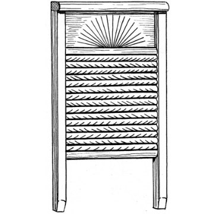
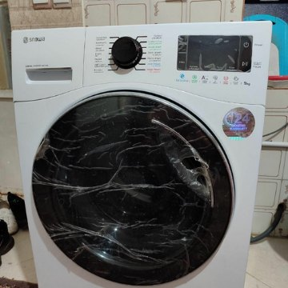

3번 방 · 10차시
발명 수사 보고서
발명품이 생기기 전과 후를 비교하고, 어떤 불편함을 해결했는지 써요.

번호
이름
1
수사할 발명품
오늘 본 발명품 중 하나를 골라요발명품 이름 : 세탁기
2
전과 후를 그려요
전

이름 : 빨래판
➜
후

이름 : 세탁기
3
무엇이 달라졌나요?
😣 불편했던 점
빨래를 하나하나 문질러야 해서
팔이 아프고 오래 걸렸어요.
💡 좋아진 점
버튼만 누르면 기계가
빨래를 대신 해 줘요.
빨래판이(가) 불편해서세탁기이(가) 생겼어요.
★
요즘 나를 불편하게 하는 것은?
다음 시간 ‘불편함 수사대’에서 이어서 해요아침마다 책가방에 넣을 준비물을 자꾸 잊어버려요.
필통 안에서 연필끼리 부딪혀 심이 부러져요.
전과 후를 비교했어요☆☆☆
불편했던 점을 찾았어요☆☆☆
내 불편함을 떠올렸어요☆☆☆
3번 방 열쇠